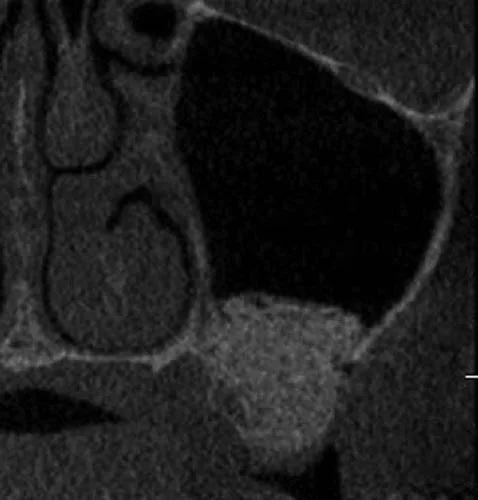
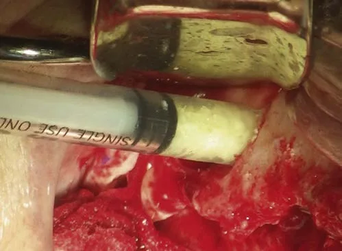

نسخه استخراجشده؛ ترجمه یا تأیید علمی انجام نشده است. وضعیت: captured
طبقهبندی سابآنترال (SA) یک پرسش را به یک مسیر تبدیل میکند: چقدر استخوان عمودی بین کرست و کف سینوس باقی مانده؟
SA-1 — استخوان فراوان، بدون دستکاری سینوس. در شرایط مساعد بیش از ۸ میلیمتر استخوان میزبان (ایمپلنت حدود ۸ میلیمتر یا بلندتر) و در شرایط نامساعد بیش از ۱۰ میلیمتر (ایمپلنت حدود ۱۰ میلیمتر یا بلندتر) لازم است. توجه کن که حداقلِ لازم با فاکتورهای نیرو تغییر میکند؛ یک عدد ثابت برای همه نیست. ایمپلنتها حدود ۴ تا ۸ ماه — بسته به تراکم استخوان و فاکتورهای نیرو — در محیط بدون عملکرد ترمیم مییابند.
SA-2 — بلند کردن مختصر بدون پیوند. وقتی انتخاب میشود که طول ایمپلنت مورد نظر ۱ تا ۲ میلیمتر بیش از استخوان عمودی موجود باشد. ممبران حدود ۱ تا ۲ میلیمتر بلند میشود بدون پیوند استخوان، و ایمپلنت با همان مقدار نفوذ در سینوس قرار میگیرد.
و دو محدودیت مهم: چون این رویکرد کف سینوس را تغییر میدهد، وجود پاتولوژی پیشین سینوس مجاز نیست چون خطر عفونت رتروگرید محل ایمپلنت را میسازد. و این را بدان: تلاش برای بلند کردن مخاط سینوس بیش از ۲ میلیمتر از میان یک استئوتومی به عرض ۳ تا ۴ و عمق ۸ میلیمتر قابلپیشبینی نیست.
SA-3 — پیوند و کاشت همزمان. ارتفاع اولیهی ۵ تا ۱۰ میلیمتر. چیزی که این همزمانی را ممکن میکند، ترکیب استخوان کورتیکال کرست باقیمانده و استخوان کورتیکالمانند کف اصلی آنتروم است که با هم میتوانند ایمپلنت را در همان جلسه تثبیت صلب کنند. استخوان میزبان بیشتر یعنی خونرسانی بیشتر، و ترمیم سریعتر و قابلپیشبینیتر.
SA-4 — پیوند اول، ایمپلنت بعد. استخوان میزبان کمتر از ۵ میلیمتر. اینجا استخوان باقیمانده نمیتواند ثبات اولیه بدهد، پس دو جراحی از هم جدا میشوند.
تحول این طبقهبندی: در ۱۹۹۵ نسخهی ۱۹۸۷ این طبقهبندی اصلاح شد و بُعد جانبی (عرض) حفرهی سینوس به آن افزوده شد، چون سینوسهای کمعرض (۰ تا ۱۰ میلیمتر) سریعتر از سینوسهای عریض (بیش از ۱۵ میلیمتر) استخوان میسازند. در ۲۰۱۷ هم گزینههای جایگزین — ایمپلنت کوتاه، رویکردهای پیوند کرستال و تعدیل بر پایهی فاکتورهای نیرو — به آن اضافه شد.

تفاوت SA-3 و SA-4 فقط در تعداد جراحی نیست؛ در طول کل مسیر است.
• SA-3: بلوغ کلی گرافت ۴ تا ۱۰ ماه.
• SA-4: دستکم ۴ تا ۶ ماه تا کاشت ایمپلنت، و ۴ تا ۸ ماه دیگر تا مرحلهی دوم و برداشتن پوشش. مجموع تا بازسازی پروتزی: ۸ تا ۱۴ ماه.
• در SA-1 پس از ترمیم ۴ تا ۸ ماهه، اباتمنت اضافه میشود. و وقتی ایمپلنت در سینوس پیوندشده گذاشته میشود، بهتر است مرحلهی دوم دیرتر انجام شود نه زودتر — اغلب ۶ ماه یا بیشتر — و در بازسازی پروتزی بارگذاری تدریجی استخوان به کار رود.
این اعداد را با بیمار در جلسهی اول در میان بگذار؛ ۸ تا ۱۴ ماه چیزی نیست که بتوان در میانهی درمان اعلام کرد.
و یک واقعیت که همهی این زمانبندی را معنا میدهد: بیشتر سینوسهای پیوندشده — بهویژه SA-4 — استخوان نوع D4 میسازند؛ یعنی نرمترین دسته. به همین دلیل در این محلها باید رویکرد جراحی اُسئودنسیفیکیشن و تکنیکهای بارگذاری تدریجی بهدقت رعایت شوند. استخوانی که ساختهای، بهطور خودکار به تراکم استخوان بومی نمیرسد.
رویکرد کرستال با استئوتوم — راه دوم SA-3. استئوتومی با متهی پایلوت تا ۱ تا ۲ میلیمتر مانده به کف سینوس آماده میشود و با متهها یا استئوتومهای تدریجاً بزرگتر، تا دستکم یک مته کمتر از عرض نهایی ایمپلنت، پهن میگردد. سپس یک استئوتوم باریک با ضربهی چکش کف سینوس را میشکند و استئوتومهای پهنتر ارتفاع را بهتدریج بالا میبرند.
قطعهی کوچکی کلاژن — حدود ۱٫۵ برابر حفرهی استئوتومی — با آخرین استئوتوم وارد میشود تا میان مادهی پیوند و ممبران حائل باشد؛ بعد مادهی پیوند اندکاندک وارد و با استئوتوم بالا رانده میشود. این رویکرد ممبران را حدود ۳ تا ۴ میلیمتر بالا میبرد؛ برای ارتفاع بیشتر، پنجرهی جانبی لازم است.
اگر استئوتوم پس از ضربه به عمق مورد نظر نرسید، خارج میشود و استئوتومی با متههای چرخشی ۱ میلیمتر عمیقتر آماده میگردد — نه اینکه محکمتر بکوبی. و هنگام خارج کردن استئوتومها هم باید احتیاط کرد.
هزینهی این راحتی: این تکنیکهای «کور» خطر پارگی ممبران سینوس را بالا میبرند. دسترسی کمتر یعنی دید کمتر.

نوع سؤال: ساخت کلمه · 6 خانه
حروف منبع: ن · م · ز · م · ا · ه